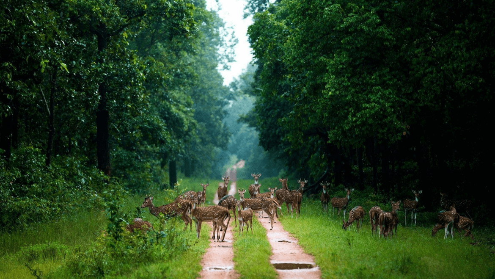
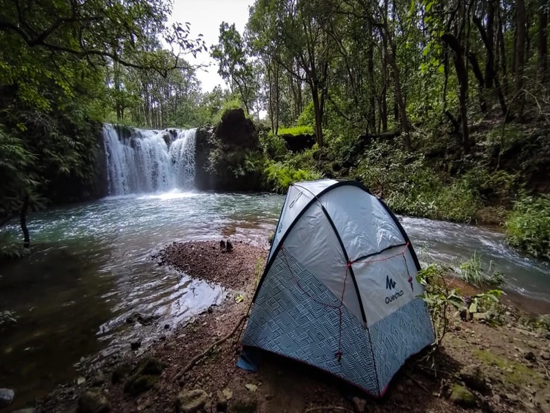
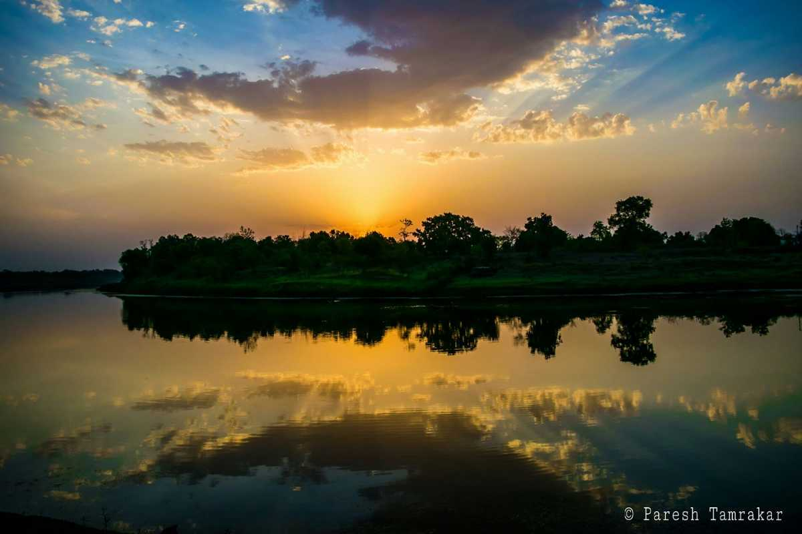
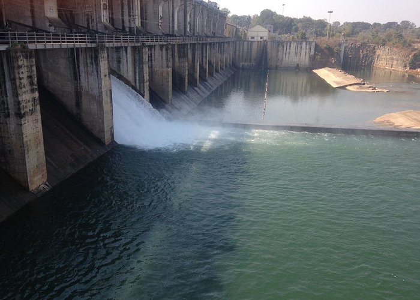

Chhattisgarh is a landlocked state in Central India. It is the ninth largest state by area, and with a population of roughly 30 million, the seventeenth most populous.It borders seven states – Uttar Pradesh to the north, Madhya Pradesh to the northwest, Maharashtra to the southwest, Jharkhand to the northeast, Odisha to the east, Telangana and Andhra Pradesh to the south.Formerly a part of Madhya Pradesh, it was granted statehood on 1 November 2000 with Raipur as the designated state capital. Chhattisgarh is one of the fastest-developing states in India.Its Gross State Domestic Product (GSDP) is ₹3.63 lakh crore (US$45 billion), with a per capita GSDP of ₹102,762 (US$1,300).A resource-rich state, it has the third largest coal reserves in the country and provides electricity, coal, and steel to the rest of the nation.It also has the third largest forest cover in the country after Madhya Pradesh and Arunachal Pradesh with over 40% of the state covered by forests.
The capital of Chhattisgarh, Raipur is the largest city in the state. With more than hundreds of steel mills and six steel plants, Raipur is also one of the largest industrial centres of the country. Besides steel, it is also home to the aluminium and coal industries. A primary business and industrial hub, Raipur is even fast emerging in the tourism sector, attracting tourists from across the world. The city is known for its temples, lakes, factories, educational centres as well as the development of Naya Raipur. Naya Raipur is a newly planned city and is about 17km away from the current town. The Swami Vivekananda Airport lies in between Raipur and Naya Raipur facilitating travel.
Raipur has a rich history and until 2000 was a part of Madhya Pradesh. After the formation of the new state of Chhattisgarh, Raipur was made its capital, primarily because of its centralised location. Located in the centre of the plains that are also called the ‘rice bowl of India’, Raipur is surrounded by the districts of Durg and Bemetara. The city is a bustling capital city with a multicultural and multi-religious society.
Sirpur is a small village located in the state of Chhattisgarh, situated on the banks of river Mahanadi. It is 35 km away from the Mahasamund district and around 78 km away from the city of Raipur, which is the capital of Chhattisgarh. The village of Sirpur is an archaeological wonder. Inspiration to many architects, this village is rich in its temple culture. A quaint hidden gem, it has a deep connection to the Buddhism world and a treasure for archaeological findings from the 8th century.
There are numerous temples one can visit, and is generally a hub for passionate historians. A look at the historical artefacts and the deep carvings on the walls of the temples have inspired many architects around the world.

One of the most famous tourist attractions in Chhattisgarh, the Barnawapara Wildlife Sanctuary is home to the Bar and Nawapura forest villages. It was established in the year of 1976 and is spread over a vast area of 245 sq. Km. The rich and lush vegetation caters to a broad spectrum of wildlife in this region. The landscape is mostly flat terrain with occasional low and high hillocks.
The Barnawapara Wildlife Sanctuary is home to Neelgai, wild boar, tigers, leopards, porcupine, pythons, antelopes, sambhar and Cheetal, along with 150 species of birds including parrots, Black Bucks, herons, egrets, peafowl etc. Another sight to behold is the barking deer. The fearless Indian bison, also known as ‘Gaur’ is regarded as the main offering of the Barnawapara Wildlife Sanctuary. The sanctuary is part of a tropical dry deciduous forest, and the plethora of flora include Mahua, Semal, Tendu Ber etc. There is also a canteen available on the premises for the benefit of the travellers

Mainpat is an underrated hill station with green pastures, deep valleys, breathtaking waterfalls, dense forests and untouched rivulets. The hill station hasn’t been completely commercialised yet and receives a relatively smaller influx of tourists compared to its counterparts. Mainpat is often called as Shimla of Chhattisgarh and Mini Tibet owing to its huge Tibetan population and influence over the area. The Tibetan refugees were rehabilitated in Mainpat after the Chinese invasion of Tibet and have since found a home in Mainpat. That’s another great thing about Mainpat, the confluence of cultures and diverse traditions only add to the picturesque village’s charm.

Madku dweep is a beautiful island situated near the silent river, Shivnath, in the Bilaspur district of Chhattisgarh. The name Madku stems out from the fact that the island is of the shape of a frog. The beauty of this island is considered to be spell-bounding. The picturesque Madku Dweep has an area of around 24 hectares and is full of greenery. The island is also famous for its ancient temples and their historical and archaeological importance.
Archaeologists have discovered prehistoric stone tools, epigraphs, and coins on this island. Stone inscriptions have also been found, which are believed to date back to the 3rd century BC.

Home to the Chalukya empire of the 14th Century, Dhamtari is an important tourist town of Chattisgarh, also known for its temples. The town has a population of around 82000. It attracts a lot of tourists every year, particularly during the monsoon seasons to the Ravishankar Water Dam.It is also famous for its folk culture and wildlife sanctuary.
Dhamtari is located along the banks of Mahanadi and its tributaries Pairy, Sendur, Sondur, Joan, Kharun and Shivnath.
Chitrakote waterfalls
Tirathgarh Falls
Rajpuri Falls
Amrit Dhara waterfall
Chitradhara Falls
Charre-Marre Falls
Ghatarani Waterfall
Malanjhkudum Falls
Maa Bamleshwari Devi, Dongargarh
Mahamaya Temple, Bilaspur
Danteshwari Temple, Dantewada
Chandrahasini Devi Temple, Janjgir
Banjari Mata Mandir, Raigarh
Jatmai Ghatarani, Raipur
Shivani Maa Temple, Kanker
Patala Bhairavi Temple, Rajnandgaon